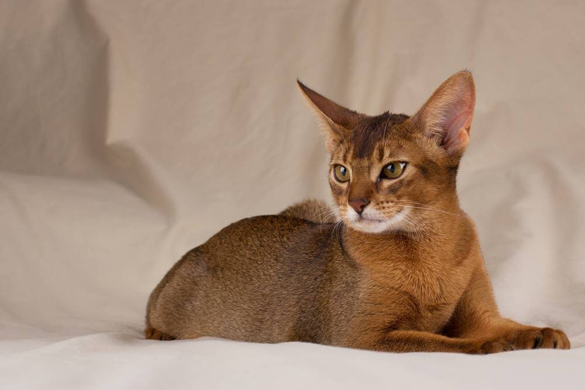
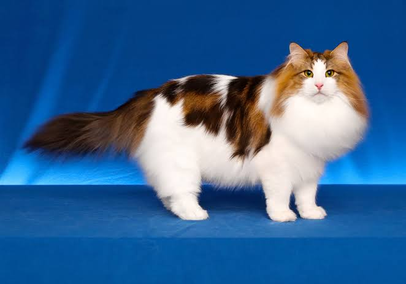

Abinismo
Los abisinios o abisinias son gatos elegantes de tamaño mediano con un cuerpo ágil y fuerte, y patas esbeltas.

Bobtail japonés de pelo corto
El bobtail japonés tiene una forma elegante y una musculatura bien desarrollada

Bobtail japonés de pelo corto
Leyenda mítica descendiente de felinos guerreros, el gato bosque de Noruega es asombrosamente bello y su personalidad va a juego. Es afectuoso, tranquilo y se adapta fácilmente a la vida familiar.